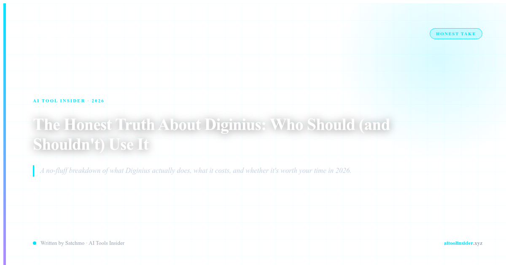

STOP. DO NOT BUY DIGINIUS IF...
Before you click that affiliate link, I need to tell you something the marketing won't: Diginius is not for everyone. In fact, if you fit any of these profiles, close this tab right now and look elsewhere.
Do NOT buy Diginius if:
- You're a solopreneur or freelancer: You don't need B2B intent data, contact enrichment, or PPC management tools. You're not managing client campaigns. This tool is built for agencies.
- You need intuitive, easy-to-use software: G2 reviews note the interface has a learning curve. Several users mentioned the dashboard takes time to figure out. If you want plug-and-play, this isn't it.
- You're on a tight budget: The Essential plan is $75/month for 2 users. That's $37.50 per user. For small teams, that's not nothing. And this is not for small teams.
- You just need basic analytics: If you just want to track website traffic or basic social metrics, use free tools. Diginius is designed for deep PPC intelligence, not basic reporting.
- You need real-time data: Some reviews indicate data refresh delays. If you need instant insights for time-sensitive campaigns, this might frustrate you.
If any of those describe your situation, walk away. This tool will frustrate you. But if you're still reading, here's why Diginius might be the best decision you make this year.
Try Diginius Free →THE HIDDEN TRUTH ABOUT DIGINIUS
Here's what nobody tells you: Diginius isn't trying to be a general marketing tool. It's solving a specific problem for a specific customer.
It's built for marketing agencies that manage multiple client PPC campaigns. It's for the team that needs to show clients real ROI across Google Ads, Facebook, LinkedIn, and TikTok. It's for the account manager who needs to justify their fees with concrete data.
One G2 reviewer put it perfectly: "Essential for agencies managing multiple client accounts. The B2B intent data and contact enrichment features alone justify the price for our team."
That's the key phrase: "for agencies." This isn't software built for in-house marketing teams. It's built by people who've actually run agency operations. And that shows.
Essential for agencies managing multiple client accounts. The B2B intent data and contact enrichment features alone justify the price for our team. — G2 Reviewer
WHAT YOU ACTUALLY GET
Let's talk about what Diginius actually delivers:
- B2B Intent Data: Know which companies are actively researching your client's products. This is the feature that makes account-based marketing actually work.
- Lead Intelligence: Get beyond surface-level leads. Diginius enriches contacts with company size, revenue, technology stack — the data that actually closes deals.
- Contact Enrichment: Add 100+ data points to any contact. No more cold calling the wrong people at the wrong companies.
- Digital PPC KPIs: Track every metric that matters: ROAS, CAC, LTV, conversion rates across every platform. One dashboard instead of 10 different reports.
- Social Media Tracking: Measure engagement, reach, and ROI across all client social accounts. Finally prove social media value to skeptical clients.
- SEO Analytics: Integrated SEO tools so you can show clients the full picture — PPC + organic + social.
The 30-day free trial gives you 100 Intent Leads/week and 100 contact info credits. That's enough to test the product with real data before committing. That's more than fair.
See Current Pricing for Diginius →WHO DIGINIUS IS ACTUALLY FOR
Let me be specific about who should be using this:
- Digital marketing agencies: You manage 5+ client accounts and need to prove ROI across all of them. Diginius gives you the data to justify your fees.
- Account-based marketing teams: The B2B intent data is legit. If you're targeting specific companies, this tells you who's actually in market.
- Enterprise sales teams: Contact enrichment with 100+ data points means your SDRs are calling the right people at the right companies.
- PPC specialists managing large budgets: If you're spending $50k+/month on ads, the intelligence features pay for themselves in better targeting.
If that sounds like you, keep reading. If it doesn't, I've already told you to leave.
THE REAL CONS — NO SHAMING
I've already mentioned these, but let's be thorough:
- Learning curve exists: G2 reviews confirm the interface isn't intuitive out of the box. There's setup time. Training is required.
- Not for beginners: If you don't understand PPC, attribution, or marketing metrics, this tool will confuse you. It's built for professionals.
- Data refresh delays: Some users report that real-time data isn't always real-time. Worth noting if you need instant updates.
- Pricing adds up: $75/month for 2 users is just the Essential tier. Larger teams cost more. Budget-conscious teams should think carefully.
But here's the thing: every agency tool has trade-offs. The question is whether the trade-offs are worth the capabilities. For agency-level PPC management, they are.
THE BOTTOM LINE
Diginius is not perfect. It has a learning curve. It's not for beginners. It's not for solopreneurs. If you need easy, if you need cheap, if you need simple — go somewhere else.
But if you're an agency managing client campaigns, if you need B2B intent data to power account-based marketing, if you want to justify your fees with concrete ROI data — you just found your platform.
The 30-day free trial lets you test with real data. 100 Intent Leads/week and 100 contact credits. That's more than enough to see if it works for your operation.
The choice for the right user is obvious.
Claim Your Diginius Deal →